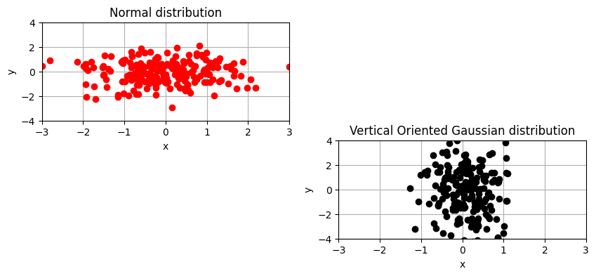

import numpy as np
# Dimension of the problem
n = 10
# Create the vectors
x1 = np.linspace(0, 1, n)
x2 = np.random.randn(n)
# Create the matrix
A = np.random.randn(n, n)
# Compute y1 and y2
y1 = A @ x1
y2 = A @ x2
# Compute y = A(x1 + x2)
y = A @ (x1 + x2)
# Check the equality
print(y)
print(y1 + y2)
[ 2.13625816 -2.12547187 -3.90294468 0.30287742 -0.43244811 1.46770232
1.65040786 4.63038374 0.9191799 -3.84391245]
[ 2.13625816 -2.12547187 -3.90294468 0.30287742 -0.43244811 1.46770232
1.65040786 4.63038374 0.9191799 -3.84391245]
# Create arrays
v = np.array([0, 1, -1, 2, 1, -1])
w = np.array([0, 0, -1, 1, 2, -1])
# Slicing
t = v[v == w]
print(v)
print(w)
print(t)
[ 0 1 -1 2 1 -1]
[ 0 0 -1 1 2 -1]
[ 0 -1 -1]
v = np.random.randn(10_000)
v[v < 0] = 0
print(v)
[0. 0. 0. ... 0.35471083 0. 0.12042714]
A = np.random.randn(5, 5)
print(A)
B = A[0:3, 0:2]
print(B)
[[ 1.45988722 0.31256057 -0.69132171 0.48458494 -1.53126926]
[ 0.06594273 0.49350668 -1.58810363 -0.12108657 1.17859011]
[-0.8826865 0.50593281 -0.7095855 1.864989 0.27558774]
[ 1.98784891 -0.56899103 0.19915033 -0.29575515 -0.28369004]
[ 0.1860786 -0.11394548 -0.59603133 -0.08180615 0.17209588]]
[[ 1.45988722 0.31256057]
[ 0.06594273 0.49350668]
[-0.8826865 0.50593281]]
# Set n
n = 10
# Create a matrix A with normally distributed values
A = np.random.randn(n, n) # np.random.normal(0, 1, (n, n))
print(A < 0)
# Create matrix B as required
B = A
B[A < 0] = 0
print(B)
[[False False True False False False True False True True]
[False True True False False True False False True True]
[ True True False False False False True False False True]
[False False True False True True False False True False]
[ True False False False False True False False True False]
[False True False False True True False False False False]
[ True True False False False False True False True True]
[False True True False True True True True True True]
[ True True False False True True True True False True]
[False False False True False True False True False False]]
[[2.09410937 1.3979457 0. 1.10956959 0.97789542 0.00967215
0. 0.64809604 0. 0. ]
[1.11885376 0. 0. 1.08856131 0.3092559 0.
0.75680124 1.22695774 0. 0. ]
[0. 0. 0.8296613 0.43176758 0.86684203 1.31932756
0. 0.24872371 1.52290022 0. ]
[0.22458268 0.26001028 0. 2.23218302 0. 0.
0.12559176 1.42753393 0. 2.39226306]
[0. 1.38525573 0.4727908 1.39078934 1.00205571 0.
0.44662793 0.34037865 0. 0.32028848]
[1.41527312 0. 0.50168755 1.06134296 0. 0.
0.57184909 1.24076715 0.15304442 0.77703548]
[0. 0. 1.70839149 0.93064683 0.15681688 0.0663509
0. 0.610361 0. 0. ]
[2.01895777 0. 0. 1.36421405 0. 0.
0. 0. 0. 0. ]
[0. 0. 0.67568007 1.30851445 0. 0.
0. 0. 0.43695608 0. ]
[0.70912511 1.3917251 0.12758709 0. 0.05182235 0.
0.55686896 0. 0.34118713 1.74323201]]
v = np.array([1, 0, 1])
A = np.array([[1, 1, 1],
[0, -1, 1],
[0, 0, 1]])
print(v)
print(A)
print(np.linalg.norm(v, 2))
print(np.linalg.norm(A, np.inf))
[1 0 1]
[[ 1 1 1]
[ 0 -1 1]
[ 0 0 1]]
1.4142135623730951
3.0
v = np.linspace(0, 1, 100)
print(v.shape)
A = np.reshape(v, (10, 10))
print(A.shape)
w = np.reshape(A, (100,))
print(w.shape)
print(A.flatten().shape)
(100,)
(10, 10)
(100,)
(100,)
import numpy as np
import matplotlib.pyplot as plt
# Creating two vectors
a = 0
b = 2*np.pi
N = 50
x = np.linspace(a, b, N)
y = np.sin(x)
# Visualize
plt.plot(x, y)
plt.grid()
plt.title("f(x) = sin(x)")
plt.xlabel(r"$x$")
plt.ylabel(r"$y = \sin(x)$")
plt.show()
import numpy as np
import matplotlib.pyplot as plt
# Creating two vectors
a = 0
b = 2*np.pi
N = 50
x = np.linspace(a, b, N)
y1 = np.sin(x)
y2 = np.cos(x)
# Visualize
plt.plot(x, y1)
plt.plot(x, y2)
plt.title('A plot of trig. functions.')
plt.xlabel('x')
plt.ylabel('y')
plt.legend(['f(x) = sin(x)', 'f(x) = cos(x)'])
plt.grid()
plt.show()
import numpy as np
import matplotlib.pyplot as plt
# Creating two vectors
a = 0
b = 2*np.pi
N = 50
x = np.linspace(a, b, N)
y1 = np.sin(x)
y2 = np.cos(x)
# Visualize
plt.plot(x, y1, 'o', color='red')
plt.plot(x, y2, 'ko--', linewidth=2)
plt.title('A plot of trig. functions.')
plt.xlabel('x')
plt.ylabel('y')
plt.legend(['f(x) = sin(x)', 'f(x) = cos(x)'])
plt.grid()
plt.show()
import numpy as np
import matplotlib.pyplot as plt
# Creating data
N = 200
x1 = np.random.normal(0, 1, (N, ))
y1 = np.random.normal(0, 1, (N, ))
x2 = np.random.normal(0, 0.5, (N, ))
y2 = np.random.normal(0, 2, (N, ))
# Visualize
plt.figure(figsize=(10, 4))
plt.subplot(2, 2, 1)
plt.plot(x1, y1, 'o', color='red')
plt.title('Normal distribution')
plt.xlabel('x')
plt.ylabel('y')
plt.xlim([-3, 3])
plt.ylim([-4, 4])
plt.grid()
plt.subplot(2, 2, 4)
plt.plot(x2, y2, 'o', color='k')
plt.title('Vertical Oriented Gaussian distribution')
plt.xlabel('x')
plt.ylabel('y')
plt.xlim([-3, 3])
plt.ylim([-4, 4])
plt.grid()
plt.show()

import numpy as np
import time
# Choose n
n = 10_000
# Define a matrix A
A = np.random.randn(n, n)
y = np.random.randn(n)
if np.linalg.matrix_rank(A) == n:
print("Invertible")
start_time = time.time()
# Compute the inverse of A
A_inv = np.linalg.inv(A)
# Compute solution x_sol = A_inv * y
x_sol = A_inv@y
end_time = time.time()
print(end_time-start_time)
import numpy as np
# Generates the problem
A = np.array([[1, 1, 1], [2, 1, 2], [0, 0, 1]])
y = np.array([0, 1, 0])
# Solve the system
x_sol = np.linalg.solve(A, y)
print(f"The solution is {x_sol}.")
The solution is [ 1. -1. 0.].
import numpy as np
import scipy
import scipy.linalg
# Setting up the dimension
n = 25
# Creating the test problem (with Hilbert matrix)
A = scipy.linalg.hilbert(n) # n x n hilbert matrix
x_true = np.random.randn(n) # n-dimensional vector of ones
y = A @ x_true # Compute the term y s.t. x_true is a sol.
# Solving the system with numpy
x_sol = np.linalg.solve(A, y)
# Computing the accuracy
E_rel = np.linalg.norm(x_true - x_sol, 2) / np.linalg.norm(x_true, 2)
print(f"True solution: {x_true}.")
print(f"Computed solution: {x_sol}.")
print(f"The relative error is {E_rel}")
True solution: [-0.29506695 -0.1537264 -0.32315159 1.82550741 0.63147538 -1.32769221
-1.07154057 0.56313133 -1.20847753 0.15214497 0.61124039 -1.29018792
-2.187197 1.53213993 1.93523498 0.18065017 1.11396943 0.9250514
-0.27727349 1.39424164 -0.30912105 0.55509324 0.89840621 -0.05980623
1.06325858].
Computed solution: [-0.29506701 -0.15371646 -0.32352801 1.83159559 0.57977392 -1.07553176
-1.79149685 1.68680052 -1.87886309 -0.09151426 0.17929233 0.89241893
-3.20868648 -1.37138035 6.82965432 -4.15870077 4.40124917 -0.63366941
-0.8435823 3.0080061 -0.05267349 -4.09996328 7.38945648 -3.81966614
1.87809642].
The relative error is 2.3453903188264986